電子機器の開発
電子機器開発の流れ
真響電機では、電子回路設計・筐体設計・ソフトウェア設計まで開発を行う事が可能です。開発の流れは以下の通りです。
ご相談・お見積もり
要件定義
設計・試作
量産・納品
真響電機では開発案件を受け付けております。過去の事例を紹介させて頂きます。
Surrender1200
Bt レシーバー
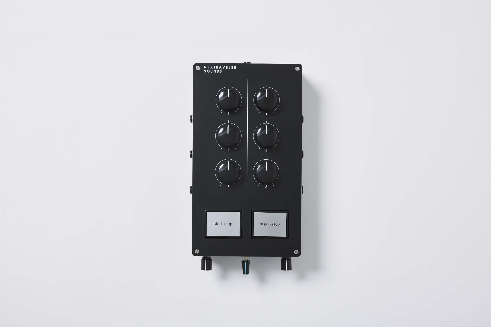
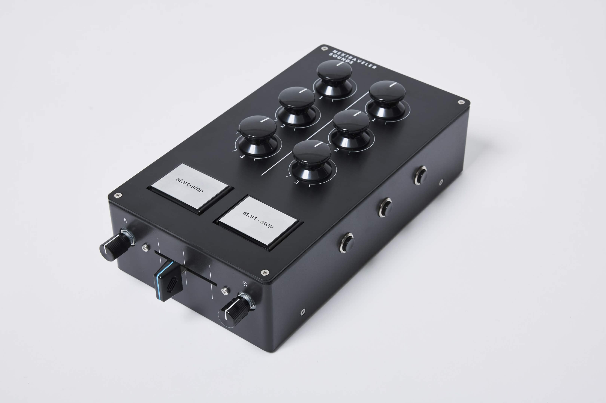
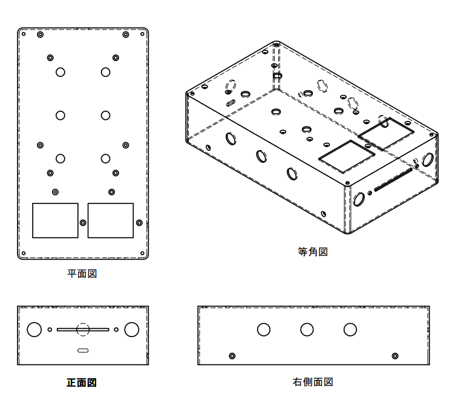
「Surrender1200」、ロータリーミキサーの操作感と、 ターンテーブルのスイッチを組み込んだDJコントローラーです。 tueks氏による開発プロジェクトに参加し、真響電機では構造設計を担当させて頂きました。
製品公式サイト
tueks氏による開発談
CREDIT
発案：高城剛
調整：角内一成
電気設計、ソフト設計、デザイン：tueks
構造監督：ゲニカク
構造設計：真響電機
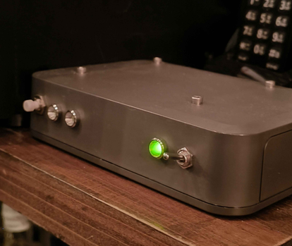
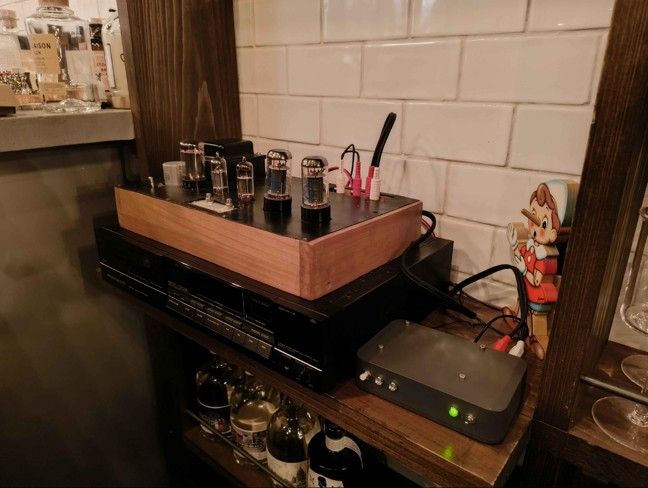

「Bt レシーバー」、スマートフォンとbt接続し、無線で音源を飛ばすことができます。 サンエイ電機様との開発プロジェクトで開発しました。真響電機では筐体・回路設計を担当させて頂きました。 現在、「Bar Giniper Sherry」さんで実際に使用していただいております。
CREDIT
発案：サンエイ電機
ソフトウェア：馬杉
筐体・回路設計：真響電機
サンエイ電機
Bar Giniper Sherry
電子機器の製造
真響電機では以下作業の少量加工を受け付けております
1608サイズまでのはんだ付け、はんだ付けキット等の製造
PLA樹脂を使用した3Dプリントサービス・3D設計代行
ボール盤を使用した穴あけ加工・ねじ切り加工、素材は木・金属・プラスチックなど用相談
電子機器の修理
電子機器修理の流れ
ご相談・お見積もり
故障診断
修理作業
検査・納品
真響電機では修理案件を受け付けております。過去の事例を紹介させて頂きます。
修理事例：5インチゲージ電車コントローラの修理
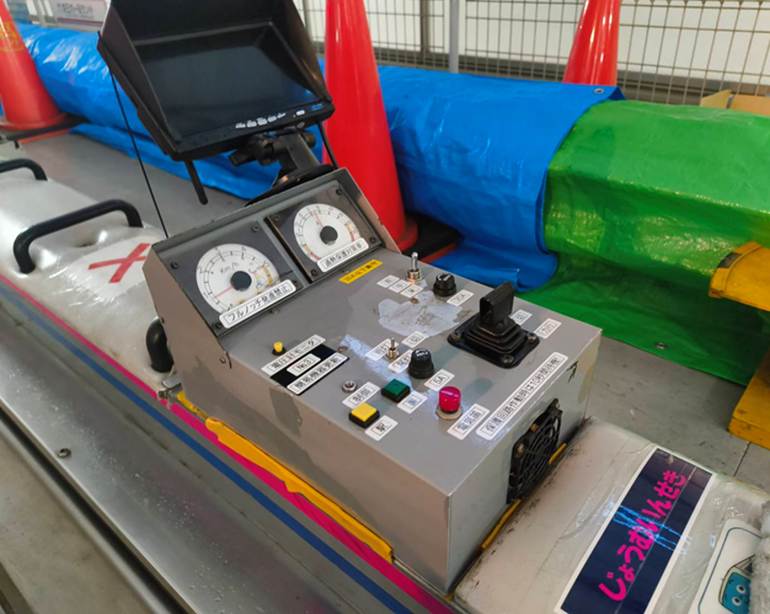
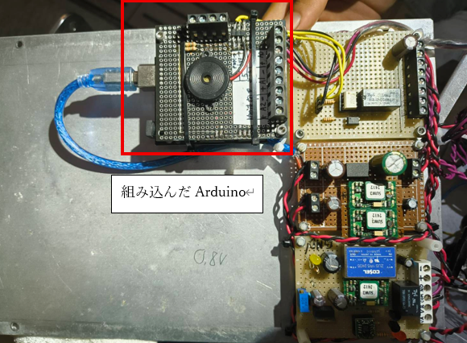
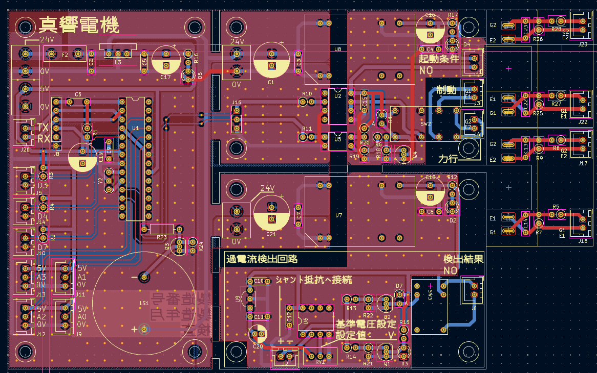
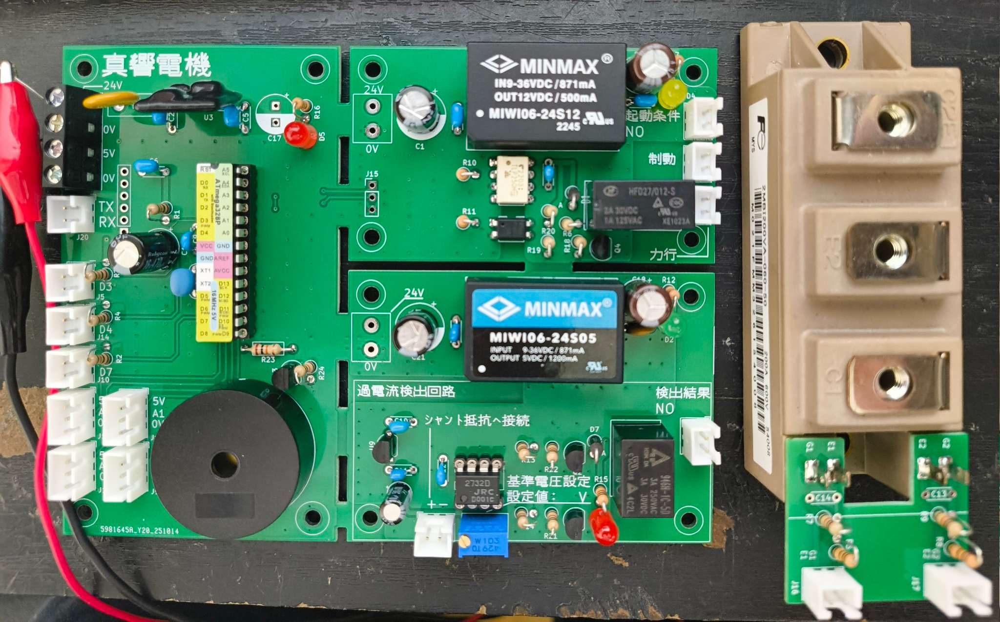
5インチゲージ電車のコントローラは、大型の直流モータを制御する装置です。 本案件では、あけぼのラジオ商会様と共同で修理を行い、お客様の元へ納品しました。 内部回路を解析し、故障原因を調査したところ、チョッパ制御の周波数発振器の故障ということがわかりました。 そこで、周波数発振回路を、アナログの物から、マイコン式の物に機器更新し、プログラム可能な回路に変更し納品しました。 熱保護回路や、過電流保護回路を追加し、より安全なコントローラとして修理しました。 また、スイッチング素子をより定格の大きな富士電機製IGBTに機器更新し、より安全率を持たせた設計にしました。
CREDIT
調整・筐体加工：あけぼのラジオ商会
電子回路修理：真響電機
電子機器の販売
真響電機では主に真空管ヘッドホンアンプの販売を行っております。以下は、試作・販売している製品です。現在はXM-10をメインに販売しております。
XM-10
XM-09
XM-08
XM-07
XM-06
XM-05
XM-04
XM-03
XM-02
XM-01

GT菅搭載の真空管ヘッドホンアンプです。S・M・Lサイズがあります。
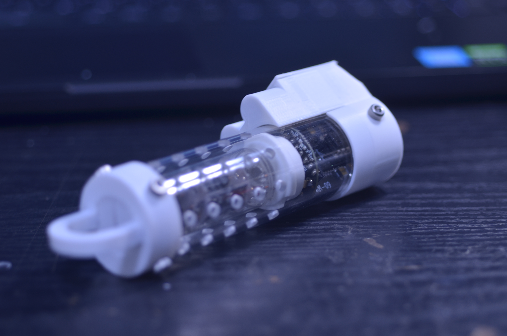
MT菅搭載の真空管ヘッドホンアンプです。XM-06を小型化する目的で開発しました。
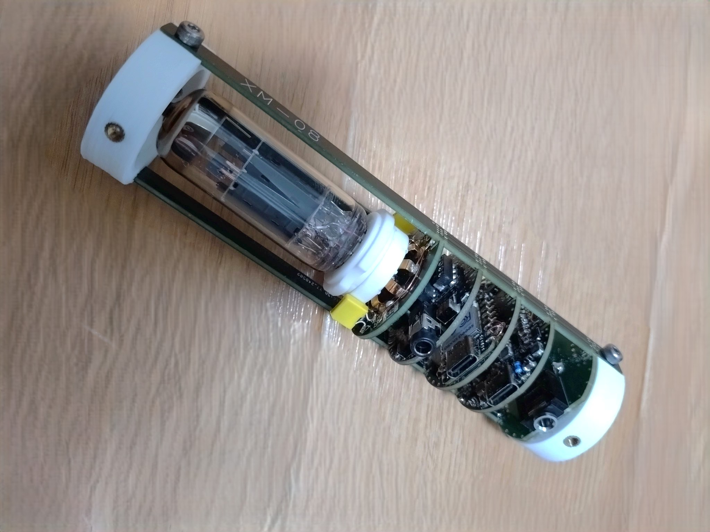
MT菅搭載の真空管ヘッドホンアンプです。XM-07を小型化する目的で開発しました。
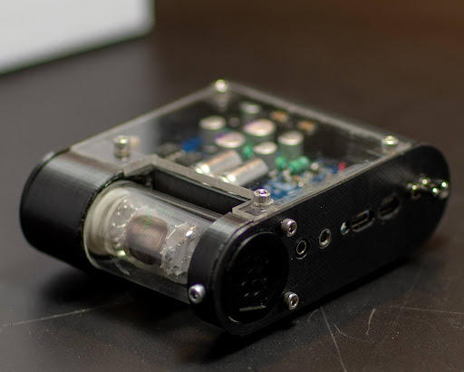
MT菅搭載の真空管ヘッドホンアンプです。真空管の乾電池駆動試験とDAC試験のために開発しました。
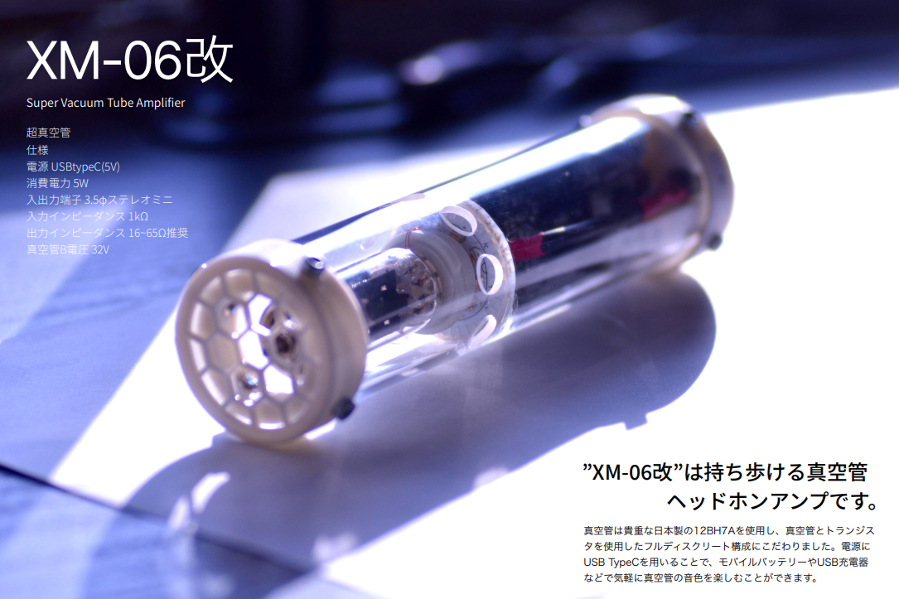
MT菅搭載の真空管ヘッドホンアンプです。XM-05を低ノイズ化するために開発しました。新開発した電源回路により低ノイズ化に成功しました。
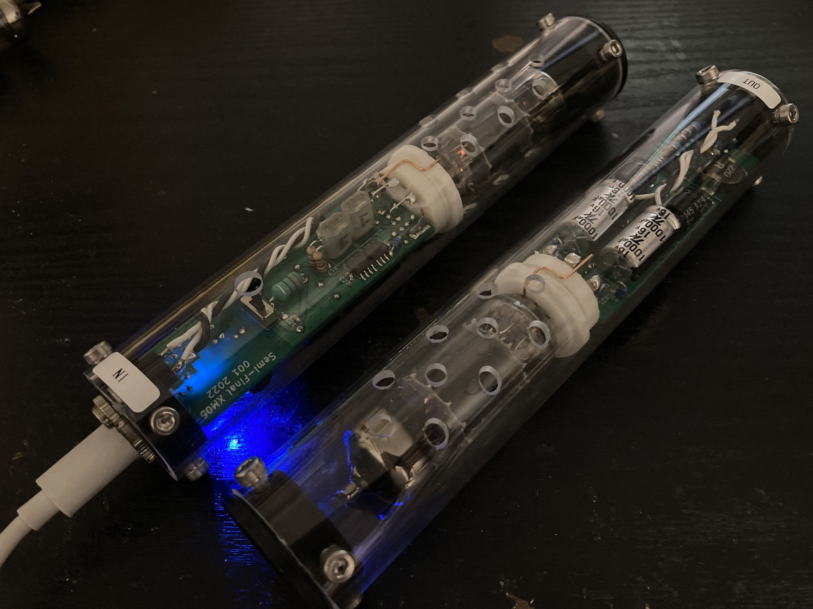
MT菅搭載の真空管ヘッドホンアンプです。XM-04を低ノイズ化するために開発しました。

MT菅搭載の真空管ヘッドホンアンプです。XM-03を低ノイズ化するために開発しました。

MT菅搭載の真空管ヘッドホンアンプです。初めて製品化した製品です。

MT菅搭載の真空管ヘッドホンアンプです。XM-01をパワーアップさせる目的で開発しました。

製品化を目指して最初に作ったMT菅搭載の真空管ヘッドホンアンプです。